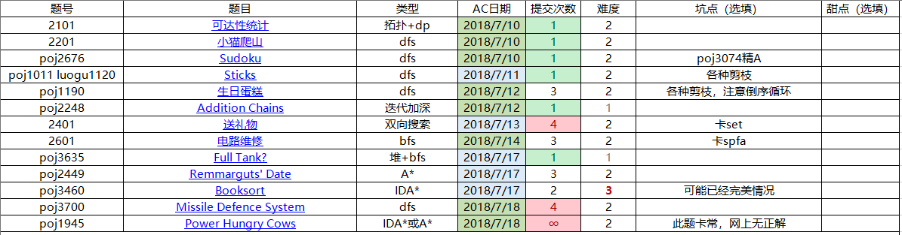

本处难度分档以个人实力为参照系
难度1：半小时内想出，半小时内ac
难度2：半小时想不出，看题解，服气
难度3：半小时想不出，看题解，ac后依然觉得难度很大

0x20 搜索
1 2101 可达性统计
7.9 难度2
一开始以为是统计 siz 的sb题
原来是我sb了，因为会有重复，那么只能把每个点能到达的统计下来了
而且因为是有向的，必须要按照拓扑序（建反边）来统计
用bitset统计，查询1的个数即可
复杂度的话，时间是$O(n^2/32)$，空间是128MB
2 2201 小猫爬山
7.10 难度2
这道题引发了我对暴搜方式的思考：
如果用车来找猫，就有次序性；
而反过来，新车选择就会减少，次序也固定
3 POJ2676 POJ3074 Sudoku
7.10 难度2
POJ2676 0ms
POJ3074 tle，精A
4 POJ1011 luogu1120 Sticks
7.11 难度3
去掉次序性的套路：强行限制大小关系，例如我选择了递减
由于值的数量比个数少，可以把值映射一下，方便查找，
至于可用性可以直接更改数量
然后这个方法包含了一个剪枝——同值不再考虑
书上的一个剪枝一直没有理解，就是当空的时候，检验前面决策
具体而言是尝试每一个木棒，任何一个失败都意味着前面决策错误
然后我的策略是毫不犹豫地选择最大的
本来是一直坚信其优越性的，直到惊觉我的做法，
发现决策的错误要在以后的层，多出了很多无用枝
5 POJ1190 生日蛋糕
7.12 难度2
剪枝
- 最优化剪枝
nows>=ans - 可行性剪枝
Ri>=1+2*(m-i)
Hi>=1+2*(m-i) - 最小化可行性剪枝
nown+getmin()>n - 最大化可行性剪枝
nown+getmax()<n
最后一个剪枝特tm难想到
首先，如果要剪枝，肯定要把上面部分的东西表示出来
N表示去掉$\pi$的体积，S表示去掉$\pi$的表面积
$$
N_后=\sum_{i=now}^m R_i^2 H_i
$$
$$
S_后=2 \times \sum_{i=now}^m R_i H_i
$$
所谓剪枝，可以考虑不等式
「据说接下来的是高中数学灰常恶心的东西：不等式的缩放」
加入元$R_{now-1}$（很难想）
$$
S_后=
\frac{2}{R_{now-1}}
\times
\sum_{i=now}^m R_i H_i R_{now-1}
$$
把右边部分缩放一下
由于$R_{now-1} > R_i$
$$
S_后
\frac{2}{R_{now-1}}
\times
\sum_{i=now}^m R_i^2 H_i
$$
联系一下体积
$$
S_后> \frac{2}{R_{now-1}} \times N_剩
$$
因为前面几个剪枝，只有一个是关于「有关答案的表面积」的
那么可以说$S_后$一定比某个值大
可以最优化剪枝一波，条件：
$$
S_现+\frac{2}{R_{now-1}} \times N_剩>=ans
$$
最后就是碰到搜索要无脑倒序循环
6 POJ2248 Addition Chains
7.12 难度1
迭代加深这个东西第一次看到
感觉它虽然比bfs慢一些，但其优势在于便于还原状态、不用大量空间来存储状态
7 2401 送礼物
7.13 难度2
其实通常面对一个决策与顺序无关，而且不卡log的题目，排序一下都不亏
其实看不出这个正解和折半搜索有什么关系
但是灰常鬼畜啊hh
主要思路来自「指数级爆搜」
把问题分成两边（已排序），搜索左右两边，然后通过枚举左边的结果，二分查找右边的
这样子复杂度就被硬生生变成了$O(2^{n/2} log_2 2^{n/2})$
折半搜索还有道体现得更明显的题目：灯
然后我们通过折半，把取值的数量从2^45变成最坏2^22，其实还不少，所以要剪枝
可恶啊卡我的set……
8 2601 电路维修
7.14 难度2
最巧妙的地方：
把决策转化为边，边权为代价
于是就变成了最短路问题
spfa一直tle……
试一试书上的新做法，以为多特别所以没有打p[x].v=0，一直wa
9 POJ3635 Full Tank?
7.17 难度1
本来以为可以dfs去记忆化
然鹅这样是错的，因为不能保证第一次就是最优解……
话说bfs的复杂度其实灰常悬，可能数据水？
10 POJ2449 Remmarguts’ Date
7.17 难度2
key：第k次出堆，得到第k小的解
akc眼中的模版题
不过最后奇奇怪怪mle
先放着吧
11 POJ3460 Booksort
7.17 难度3
A*=堆+bfs+估价
IDA*=迭代dfs+估价
最难的就是怎么估价了
目标是有序，但我们不能用「逆序对数量」，因为每次消除量是不确定的
观察题目性质，每次操作都是对连续的一段进行的
再有序的情况下，每个数都有一个正确的后继
而每次操作最多消除3个错误后继数
不过要向上取整
顺便再介绍一下折半搜索怎么做：
先考虑每次决策的分支量
如果选a本，有n-a+1种，可以插n-a处
同时对于前移，必定有一种后移方案与其等效，所以只后移
分支数$ \sum_{a=1}^{n-1} (n-a+1) \times (n-a) /2 = 560 $
普通dfs是4次方，折半一下，就变成了平方级别
可以用hash+map存储结果，第二次的时候对应找到，然后累计即可
总而言之复杂度$O(560^2 log_2 560^2)$
wa了一次，忘记判断完美情况了
0x29 搜索练习
12 POJ3700 Missile Defence System
7.18 难度2
先给出一份比较显然的做法，一组组找
尽力加上了两个剪枝：
- 仅当没东西选的时候再结束
- 当前能被now到nx中间的覆盖时，延迟搜索123456789101112131415161718192021222324252627282930313233343536373839404142434445464748495051525354555657585960616263646566676869707172737475767778using namespace std;const int MAXN=60;const int INF=0x3f3f3f3f;typedef long long ll;typedef unsigned long long ull;int mymax(int x,int y) {return x>y?x:y;}int mymin(int x,int y) {return x<y?x:y;}int myabs(int x) {return x>0?x:-x;}int n;int a[MAXN];bool v[MAXN];bool bk;int mxdep;void dfs(int cnt,int tot,int now,int up){if(bk) return;if(cnt>mxdep) return;if(tot==n) {bk=1;return;}bool b=0;int mi=INF,mx=0;for(int nx=now+1;nx<=n;nx++){if(v[nx]) continue;if(up==0 and (a[now]<a[nx] or a[nx]<mx)) continue;if(up==1 and (a[now]>a[nx] or a[nx]>mi)) continue;b=1;mi=mymin(mi,a[nx]);mx=mymax(mx,a[nx]);v[nx]=1;if(up<0) dfs(cnt,tot+1,nx,0),dfs(cnt,tot+1,nx,1);else dfs(cnt,tot+1,nx,up);v[nx]=0;}if(!b){for(int nx=1;nx<=n;nx++)if(!v[nx]){v[nx]=1;dfs(cnt+1,tot+1,nx,-1);v[nx]=0;break;}}}int main(){while(1){scanf("%d",&n);if(n==0) break;for(int i=1;i<=n;i++) scanf("%d",&a[i]);bk=0;for(mxdep=1;mxdep<=n;mxdep++){memset(v,0,sizeof v);v[1]=1;dfs(1,1,1,-1);if(bk) break;}printf("%d\n",mxdep);}}
然鹅这样依然会tle
原因大概是叉太多了?
其实想到这么多剪枝，但方向大概都是错误的
正解是考虑元素，分配组（这大概也是一个套路）
这样的话只要贪心地找最不优秀但符合条件的即可
顺利变成二叉，然后迭代加深也没意义了，最优性剪枝即可
代码就不写了
13 POJ1945 Power Hungry Cows
7.18 难度2
网上到处都是打表和玄学（其实错误）剪枝
来一股IDA*清流吧
因为感性地感觉次数不会太多，迭代一下
重点是这个估价函数不难猜出最优解一定先倍增上去再微调的
那么如果只考虑倍增，实现容易又能满足$f(s) \leq g(s)$的定义
不过有一个应该是正确的剪枝，不太会证明
如果P的约数中没有「x和y的最大公约数」，则返回
大概原因是，无论怎么操作，得到的数一定是包含这个「x和y的最大公约数」吧
想想，好像无论加减都是如此。
这个还是挺妙的
官方数据：
19997 18
15151 17
11111 17
10007 16
5123 14
5111 15
1234 13
1024 10
1023 11
1010 12
31 6
然后在这些数据中，没有卡掉一种错误做法：假设较小值不会超过50
反例：18673，答案应该是17
然后打表发现其实是6160？听别人说的
顺便吐槽一句lyd的代码是打特判过的，根本错误的做法
反正我是没卡过去
所有数据都是正确的
IDA*
A*，稍微快一点点